GridView의 선택된 cell과 row의 배경색을 지정하는 예제입니다. 관련된 속성은 selectedRowColor, selectedRowOverColor, selectedCellColor, selectedCellOverColor입니다. GridView의 속성 focusMode의 설정값에 따른 동작을 비교합니다.
선택된 cell 또는 row의 배경색 비교 - focusMode : cell
선택된 cell 또는 row의 배경색 비교 - focusMode : row
선택된 cell 또는 row의 배경색 비교 - focusMode : both
선택된 cell 또는 row의 배경색 비교 - focusMode : none
GridView의 속성 focusMode의 설정값에 따른 동작을 비교합니다. GridView의 cell을 클릭하고 선택된 cell 또는 row의 배경색을 확인합니다. 선택된 cell 또는 row에 마우스를 올렸을 때의 배경색을 확인합니다.
예제의 GridView에는 아래의 속성이 동일하게 지정되었으며, 각 속성에 지정된 배경색은 다음과 같습니다. - selectedCellColor : chocolate //선택된 cell의 배경색이 chocolate로 변경됩니다. - selectedCellOverColor : green //선택된 cell에 마우스를 over하면 배경색이 green으로 변경됩니다. - selectedRowColor : yellow //선택된 row의 배경색이 yellow로 변경됩니다. - selectedRowOverColor : skyblue //선택된 row에 마우스를 over하면 배경색이 skyblue로 변경됩니다.
cell의 배경색이 chocolate으로 변경됩니다.
[브라우저(Chrome) 실행 예시 - cell 선택]
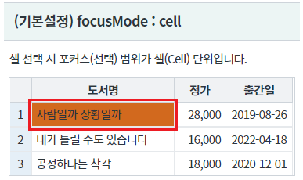
마우스를 선택된 cell 영역 밖으로 이동했다 다시 선택된 cell로 over합니다.
cell의 배경색이 green으로 변경됩니다.
[브라우저(Chrome) 실행 예시 - cell에 마우스 over]
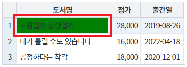
row의 배경색이 yellow로 변경됩니다.
[브라우저(Chrome) 실행 예시 - cell 선택]
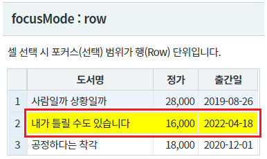
마우스를 선택된 cell 영역 밖으로 이동했다 다시 선택된 cell로 over합니다.
row의 배경색이 skyblue으로 변경됩니다.
[브라우저(Chrome) 실행 예시 - cell에 마우스 over]
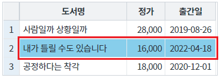
cell의 배경색이 chocolate으로 변경되고, row의 배경색은 yellow로 변경됩니다.
[브라우저(Chrome) 실행 예시 - cell 선택]
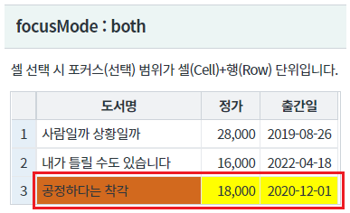
마우스를 선택된 cell 영역 밖으로 이동했다 다시 선택된 cell로 over합니다.
cell의 배경색이 green으로 변경됩니다.
[브라우저(Chrome) 실행 예시 - cell에 마우스 over]
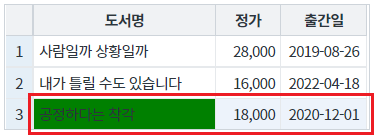
cell과 row의 배경색이 동일합니다.
[브라우저(Chrome) 실행 예시 - cell 선택]
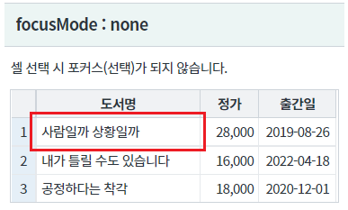
마우스를 선택된 cell 영역 밖으로 이동했다 다시 선택된 cell로 over합니다.
속성 rowMouseOverColor의 지정값이 배경색으로 표시됩니다. (속성 rowMouseOver이 true로 설정된 경우입니다.)
[브라우저(Chrome) 실행 예시 - cell에 마우스 over]
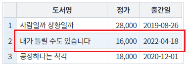
GridView의 속성을 정의합니다.
[필수] selectedCellColor="설정값" //선택된 cell의 배경색
예시1) selectedCellColor="chocolate"
예시2) selectedCellColor="#D2691E"
[필수] focusMode="cell 또는 both" //[default: cell, row, both, none]
(옵션 값)
cell : (기본 값) 셀을 선택.
both : 셀과 행을 모두 선택.
그림 1.웹스퀘어5 SP5 스튜디오의 Property View(속성창) 예시
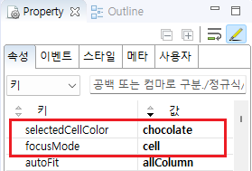
[소스 코드 예시]
<!-- gridView 의 소스 본문 예시 --> <w2:gridView focusMode="cell" selectedCellColor="chocolate" dataList="data:dlt_books"> <!-- 중략 --> </w2:gridView>
GridView의 속성을 정의합니다.
[필수] selectedCellOverColor="설정값" //선택된 cell의 마우스 오버 시 배경색
예시1) selectedCellOverColor="green"
예시2) selectedCellColor="#008000"
[필수] focusMode="cell 또는 both" //[default: cell, row, both, none]
(옵션 값)
cell : (기본 값) 셀을 선택.
both : 셀과 행을 모두 선택.
그림 2.웹스퀘어5 SP5 스튜디오의 Property View(속성창) 예시
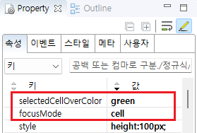
[소스 코드 예시]
<!-- gridView 의 소스 본문 예시 --> <w2:gridView focusMode="cell" selectedCellOverColor="green" dataList="data:dlt_books"> <!-- 중략 --> </w2:gridView>
GridView의 속성을 정의합니다.
[필수] selectedRowColor="설정값" //선택된 row의 배경색
예시1) selectedRowColor="yellow"
예시2) selectedRowColor="#FFFF00"
[필수] focusMode="row 또는 both" //[default: cell, row, both, none]
(옵션 값)
row : 행을 선택.
both : 셀과 행을 모두 선택.
그림 3.웹스퀘어5 SP5 스튜디오의 Property View(속성창) 예시
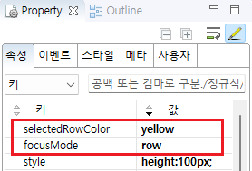
[소스 코드 예시]
<!-- gridView 의 소스 본문 예시 --> <w2:gridView focusMode="row" selectedRowColor="yellow" dataList="data:dlt_books"> <!-- 중략 --> </w2:gridView>
GridView의 속성을 정의합니다.
[필수] selectedRowOverColor="설정값" //선택된 row의 배경색
예시1) selectedRowOverColor="skyblue"
예시2) selectedRowOverColor="#00BFFF"
[필수] focusMode="row" //[default: cell, row, both, none]
그림 4.웹스퀘어5 SP5 스튜디오의 Property View(속성창) 예시
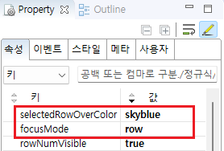
[소스 코드 예시]
<!-- gridView 의 소스 본문 예시 --> <w2:gridView focusMode="row" selectedRowOverColor="skyblue" dataList="data:dlt_books"> <!-- 중략 --> </w2:gridView>
focusMode
selectedCellColor
selectedCellOverColor
selectedRowColor
selectedRowOverColor
[웹스퀘어5 SP5 개발 가이드] GridView
링크 : https://docs1.inswave.com/sp5_user_guide/bc10c1b82c9a2a0b#e1c4658baf7e726f
[웹스퀘어5 SP5 개발 가이드] GridView 포커싱 (focusMode)
링크 : https://docs1.inswave.com/sp5_user_guide/86bdcf48029b958b#b5fb947588282de9
GridView 포커싱 (focusMode)
링크 : https://youtu.be/cyrSKWMVQmY
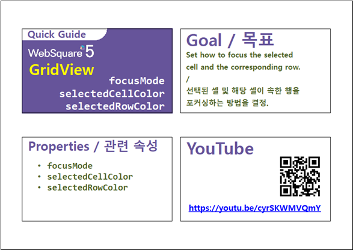